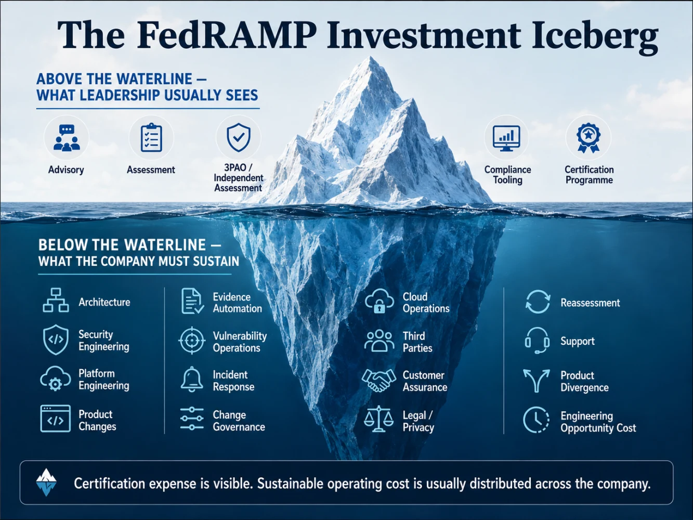
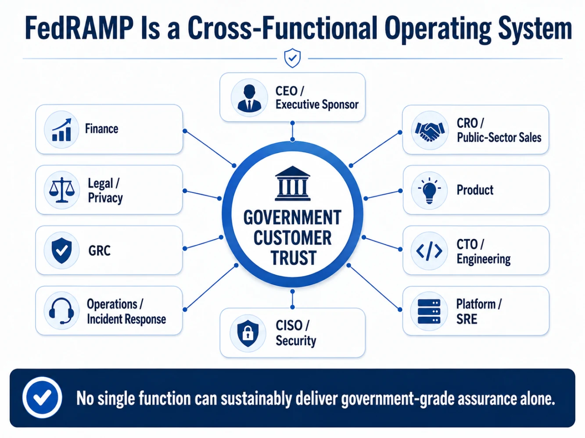
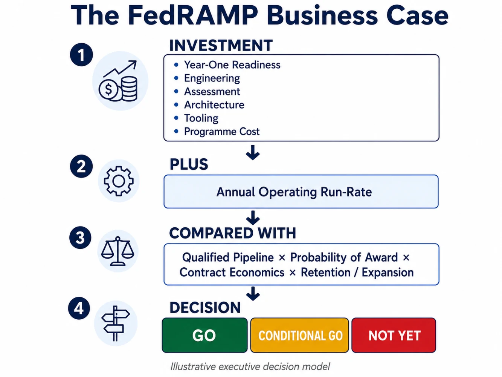

The real investment is not the assessment. It is the operating model you must sustain after it.
If your FedRAMP budget disappeared the day certification was achieved, could your product still maintain the assurance you just sold to the customer?
If the answer is no, there is a problem.
You did not fund FedRAMP.
You funded an audit.
That distinction became clearer to me as I worked through this series.
First came the customer question.
Then applicability.
Then the product boundary.
Then architecture and dependencies.
Eventually, every one of those conversations reaches the question that brings everyone back to earth:
“So… how much is FedRAMP going to cost us?”
It is an entirely reasonable executive question.
But I increasingly think it is the second financial question.
The first should be:
“What capability are we committing this company to operate for the next three to five years?”
Because the assessor invoice is visible.
The larger investment usually is not.
It sits inside Product.
Engineering.
Platform.
Security.
Operations.
Incident Response.
GRC.
Legal.
Customer Support.
And increasingly, inside the systems that must continuously produce trustworthy security evidence.
That is why I no longer think about FedRAMP primarily as a certification budget.
I think about it as an operating-model investment.
The FedRAMP cost most executives see is only the tip of the iceberg
When the business case first reaches leadership, the visible costs are relatively easy to identify:
· advisory support,
· readiness assessment,
· independent assessment,
· compliance tooling,
· documentation,
· certification activities.
Those costs matter.
But they are rarely the whole economic story.
Below the waterline are the things the organisation must actually build, change and continue operating:
Architecture remediation.
Security engineering.
Platform engineering.
Product changes.
Identity.
Cryptography.
Secure CI/CD.
Vulnerability detection.
Incident response.
Evidence generation.
Third-party assurance.
Change governance.
Cloud operations.
Customer assurance.
Reassessment.
And perhaps the cost most often hidden from the business case:
engineering opportunity cost.
Every sprint spent sustaining a government-specific capability is a sprint that cannot be spent somewhere else.
Every duplicated release path has a carrying cost.
Every government-only configuration has to be tested.
Every separate environment has to be patched.
Every manual assurance process requires people.
This does not mean FedRAMP is a bad investment.
It means the investment committee deserves to see the whole iceberg.

The 2026 FedRAMP model makes this increasingly difficult to ignore
FedRAMP now describes Certification Classes in terms of the depth, frequency and quality of assurance information a provider commits to making available to government customers.
That distinction matters.
The Certification Class does not simply tell us how “secure” a product is.
And it does not replace the agency’s responsibility to determine the impact of its own information system.
The class increasingly answers another question:
How much assurance is this provider willing and operationally capable of continuously demonstrating?
FedRAMP itself describes obtaining and maintaining Certification as a substantial investment and makes clear that higher Classes involve greater commitments to supplying assurance information. [1]
That word—maintaining—may be one of the most important words in the whole business case.
Certification is a milestone.
Maintaining confidence is an operating capability.
And those two things have very different economics.
The operating cadence is becoming part of the economics
Consider the 20x Certification Package.
The emerging model expects certification information to remain persistently current.
For 20x:
· Class A providers are encouraged to keep their package current at least every three months.
· Class B providers must maintain it at least monthly.
· Class C providers must maintain it at least every two weeks.
· Class D rules contemplate a tighter cadence when that Class becomes available. [2][3]
Importantly, this does not mean somebody should manually reread and rewrite the entire package every two weeks.
FedRAMP’s direction is toward information being updated as changes occur and toward greater use of automation. [2]
And this is where I believe the business model becomes much more interesting.
Imagine two SaaS companies pursuing the same government opportunity.
Company A
Every assurance request triggers:
emails,
screenshots,
Jira searches,
spreadsheet reconciliation,
manual vulnerability exports,
calendar reminders,
and the familiar question:
“Who has the latest evidence?”
Company B
Its normal engineering and operational systems already produce reliable evidence for:
asset state,
identity,
configuration,
deployment,
vulnerability detection,
changes,
incidents,
and security outcomes.
Both organisations may ultimately demonstrate comparable controls.
But they will not have the same cost of assurance.
That difference deserves a name.
I call it:
Assurance Debt
Technical debt is the future cost created by software shortcuts.
Security debt is the risk accumulated when security work is deferred.
Assurance debt is the operational cost accumulated when an organisation performs security activities but cannot efficiently demonstrate that those activities occurred, remain effective, or correspond to the product it is operating today.
It appears as:
· screenshot-based evidence,
· manually reconciled inventories,
· disconnected vulnerability records,
· audit-only testing,
· stale architecture documents,
· evidence dependent on individual employees,
· and tribal knowledge that cannot be queried by a system.
Two companies may have similar security capabilities.
One has built assurance infrastructure.
The other has accumulated assurance debt.
And FedRAMP increasingly exposes the difference.
This leads to a principle I believe executives should understand:
FedRAMP economics increasingly depend on the marginal cost of producing trustworthy assurance from normal operations.
And vulnerability management shows why
Traditional FedRAMP conversations frequently reference monthly scans, POA&Ms and fixed remediation windows.
Those concepts remain relevant to legacy Rev5 programmes.
But 20x is moving toward a broader Vulnerability Detection and Response model.
Current rules expect providers to systematically and persistently discover and manage vulnerabilities through appropriate mechanisms—not simply schedule a scanner once a month.
The model increasingly considers factors such as:
· potential agency impact,
· exploitability,
· and internet reachability. [4]
That is a significant operating shift.
The required capability is no longer merely:
“Run the scan.”
It is closer to:
“Continuously understand what could harm this service, prioritise it intelligently, respond appropriately, and demonstrate that the response mechanism actually works.”
That requires Security.
But it also requires:
Platform.
Engineering.
Asset ownership.
Threat intelligence.
CI/CD.
Operations.
Product prioritisation.
And executive support when remediation competes with feature delivery.
This is why the FedRAMP budget cannot live only inside GRC.
So who actually owns FedRAMP?
This is another question I believe organisations frequently get wrong.
The obvious answer is:
The CISO.
I don’t think that works.
The CISO may own the assurance strategy.
But the CISO does not independently own:
revenue,
product-market fit,
product roadmap,
cloud architecture,
engineering capacity,
customer contracts,
pricing,
release management,
or production support.
So I would make this assertion:
If Security is the only executive sponsor for FedRAMP, the programme is already under-sponsored.
Because FedRAMP is one investment decision expressed through multiple operating budgets.
Sales experiences it as market access.
Finance experiences it as investment and run-rate.
Product experiences it as roadmap pressure.
Engineering experiences it as capacity.
Platform experiences it as operational complexity.
Security experiences it as assurance and risk.
The mistake is treating those as independent problems.
A sustainable ownership model looks different
CEO / Business Unit Leader
Owns the strategic decision:
Are government customers important enough to change how we operate this product?
CRO / Public-Sector Sales
Owns:
Is there qualified pipeline behind the investment?
CFO
Owns:
Do the multi-year economics make sense?
Product
Owns:
What exactly is the government product proposition?
CTO / Engineering
Owns:
Can the architecture and delivery organisation sustain it?
CISO
Owns:
What assurance, security outcomes and risk model must we maintain?
Platform / SRE
Owns:
Can the product be operated, observed, patched and recovered continuously?
GRC
Owns:
Can the assurance programme remain coordinated and demonstrable?
Legal / Privacy
Owns:
What have we contractually promised?
Operations / Incident Response
Owns:
What happens when the service fails or is attacked?
That is not a certification team.
It is a cross-functional operating system.

The business case therefore needs two numbers—not one
I would not take this question to an investment committee:
“How much will FedRAMP certification cost?”
I would take two numbers.
Number One: Year-One Investment
Calculate:
Readiness
Architecture remediation
Engineering capacity
Security engineering
Independent assessment
Evidence / tooling capability
Cloud and platform changes
Legal and programme activity
Contingency
This is the cost required to prepare the organisation and reach the initial milestone.
It is important.
But I would pay even more attention to the second number.
Number Two: Sustainable Annual Run-Rate
Calculate:
Security + Platform capacity
Ongoing certification data
Independent reassessment
Vulnerability operations
Incident operations
Cloud premium
Customer assurance
Change management
Product divergence
Opportunity cost
This is where the true economics begin to appear.
For illustration:
A certification effort that costs $700K but creates a $1M incremental annual operating burden is not a $700K business decision.
Conversely, a company whose commercial platform already produces most of these security and assurance capabilities may face a much smaller incremental burden.
That is why generic statements such as:
“FedRAMP costs $500,000.”
are rarely enough to make an executive decision.
The assessor contributes to the cost.
But:
the architecture determines the economics.
And the operating model determines whether those economics remain sustainable.
Now compare those numbers to a real opportunity—not a theoretical market
The other side of the equation is not:
“The federal government spends billions on cloud.”
That is useful market context.
It is not your business case.
Your company does not have access to the entire government technology market.
The useful equation is:
Risk-Adjusted Government Opportunity
Qualified Pipeline
×
Probability of Award
×
Expected Contract Economics
×
Expected Retention / Expansion
−
Cost to Sell + Deliver + Sustain
This forces a more uncomfortable—and healthier—conversation.
Imagine:
$1.5M of government pipeline.
Low probability of award.
$800K of readiness investment.
Significant product divergence.
Several hundred thousand dollars of incremental annual operating expense.
FedRAMP may still be strategically justified.
But leadership should be able to explain why.
Now imagine:
multiple qualified customers,
meaningful contract economics,
reuse of the certification,
an architecture already close to the required state,
security improvements that also strengthen the commercial product,
and substantial renewal potential.
Very different business case.
The point is not:
FedRAMP is expensive.
The point is:
The value of FedRAMP is company-specific because the cost of producing trust and the probability of monetising that trust are company-specific.

“Not yet” is a legitimate CISO answer
There is another misconception I think security leaders should challenge.
Strategic leadership does not mean finding a path to yes at any cost.
Sometimes the responsible answer is:
Not yet.
Perhaps:
the pipeline is speculative.
The requirement is unclear.
The product boundary is immature.
Engineering capacity does not exist.
The architecture would require an uneconomic fork.
The organisation has accumulated too much assurance debt.
Or the customer opportunity simply does not justify the recurring operating burden.
“Not yet” does not mean rejecting government business.
It means sequencing investment intelligently.
FedRAMP itself now allows providers to progressively increase their level of assurance commitment as customer interest, risk and organisational capability justify it. [1]
That provides an important executive principle:
Do not buy more assurance commitment than the market and business strategy currently require.
This is where I would use a 90-day runway
Not:
90 Days to FedRAMP
That would be irresponsible.
Instead:
90 Days to a Better Investment Decision
Days 1–30 — DECIDE
Do not start by buying tools.
Answer:
· Which named customer opportunities exist?
· What exactly does procurement require?
· Which product is involved?
· What information will it process?
· Which FedRAMP path and Class appear relevant?
· Who is the executive sponsor?
· What is the revenue hypothesis?
· What would cause us to stop?
Gate 1
STOP
INVESTIGATE
PROCEED
Days 31–60 — ASSESS
Now examine:
· Minimum Assessment Scope
· product dependencies
· inherited services
· existing SOC 2 / ISO / NIST evidence
· architecture gaps
· identity
· cryptography
· secure SDLC
· vulnerability operations
· observability
· incident response
· third-party and AI dependencies
· staffing requirements
· product divergence
· assurance debt
Gate 2
Ask:
Can this product support government assurance without creating an operating model we cannot sustainably secure?
Days 61–90 — MOBILISE
Only after those answers exist:
· select the target certification path,
· establish programme governance,
· engage independent assessment support appropriately,
· create the remediation backlog,
· build the evidence strategy,
· define operating metrics,
· allocate engineering capacity,
· establish Year-One cost,
· establish annual run-rate,
· confirm executive sponsorship.
Gate 3
GO / CONDITIONAL GO / NOT YET
The purpose of these 90 days is not certification.
It is:
decision quality.
One more cost deserves attention: change
Government-ready products cannot remain frozen.
They need:
features,
patches,
infrastructure improvements,
model updates,
security fixes,
and cloud migrations.
FedRAMP’s 2026 Significant Change model recognises this reality by distinguishing among routine recurring, adaptive and transformative changes rather than treating every meaningful product change identically. [5]
Routine recurring changes may not require formal notification.
Adaptive and transformative changes have progressively stronger notification and validation expectations. [5]
This matters economically.
A sustainable government product cannot become a museum exhibit.
It still has to behave like software.
So the real architecture question is not:
“Can we achieve a secure state?”
It is:
“Can we keep changing the product without repeatedly losing our ability to demonstrate that state?”
That is a much harder capability to build.
Automation therefore becomes an economic capability
FedRAMP 20x places increasing emphasis on persistent verification and validation.
For Class C, for example, current requirements include automated methods supporting Key Security Indicators and historical evidence from persistent validation. [6]
That changes the value proposition of compliance automation.
The value is not merely:
“We bought software so auditors ask us for fewer screenshots.”
The strategic value is:
We reduced the marginal cost of proving that the product remains secure as it changes.
If trustworthy evidence can reliably emerge from:
CI/CD,
identity systems,
cloud configuration,
vulnerability platforms,
runtime telemetry,
incident systems,
asset sources of truth,
and security workflows,
then government assurance becomes increasingly scalable.
If every reporting cycle requires the organisation to manually reconstruct reality—
it becomes a tax on growth.
This is why I think the most mature organisations will increasingly treat assurance infrastructure similarly to other internal platforms.
Not something built for the audit.
Something that makes trust cheaper to produce.
What does success actually look like?
Most programmes define success as:
“FedRAMP achieved.”
I would define it differently.
Commercial success
Qualified government opportunities convert.
Certification is reused.
Customers see value in the assurance.
Product success
Government requirements do not create uncontrolled feature divergence.
Where appropriate, security improvements strengthen the broader commercial product.
Engineering success
Normal delivery workflows produce meaningful security evidence.
Government releases do not require heroics.
Platform success
The product remains observable.
Configuration drift is understood.
Recovery works.
Changes remain controlled.
Security success
Important vulnerabilities are detected and addressed according to risk.
Incidents can be investigated.
Security decisions remain defensible.
GRC success
The assurance story reflects the product that actually exists.
Evidence is not manually reconstructed at the end of every reporting period.
Assurance debt trends downward instead of upward.
Financial success
The annual operating cost resembles what leadership originally approved.
The programme is not surviving on invisible engineering subsidy.
And the organisation can demonstrate that the market value created by government assurance exceeds the cost of sustaining it.
The five questions I would put in front of the board
Before approving a significant FedRAMP investment, I would want credible answers to five questions.
1. What qualified revenue justifies this commitment?
Not TAM.
Not ambition.
Qualified opportunity.
2. Which exact product and government use cases are we funding?
Not “the company.”
The product.
The data.
The buyer.
3. What must change technically?
Architecture.
Engineering.
Operations.
Dependencies.
4. What will this cost every year after certification?
Not merely the assessment.
The sustainable run-rate.
5. Who owns sustaining the outcome after the programme team disappears?
If nobody can answer that—
the programme does not yet have an operating model.
If those five questions lack credible answers,
I would hesitate before approving the investment.
The question I am left with
This four-part series began with a customer requirement.
The original question was:
“Why is the government asking for FedRAMP?”
That led to:
What confidence is the customer actually trying to buy?
Then:
Does FedRAMP even apply to this product and use case?
Then:
Where is the real product-security boundary?
And finally:
What are we actually committing the company to operate?
That progression changed how I think about government assurance.
It is easy to treat FedRAMP as something Security must achieve.
I increasingly believe leadership should think about it as a capability the business must choose to sustain.
So here is the question I would leave with any CEO, CFO, CRO, CTO or CISO considering the investment:
If the FedRAMP programme budget disappeared the day certification was achieved, would the product still be capable of maintaining the assurance you just sold to the customer?
If the answer is no—
you did not fund FedRAMP.
You funded an audit.
And perhaps that is the most important financial distinction of all.
References
[1] FedRAMP — FedRAMP Certification Classes / Choosing a Certification Class, Consolidated Rules for 2026. https://www.fedramp.gov/2026/agencies/use/classes/ https://www.fedramp.gov/2026/providers/start/class/
[2] FedRAMP — Certification Package Overview, Consolidated Rules for 2026. https://www.fedramp.gov/2026/reference/certification-package-overview/
[3] FedRAMP — FedRAMP 20x. Class A, B and C are available; Class D is planned for a future phase. https://www.fedramp.gov/20x/
[4] FedRAMP — Vulnerability Detection and Response, Consolidated Rules for 2026. https://www.fedramp.gov/2026/reference/20x/b/vulnerability-detection-and-response/
[5] FedRAMP — Significant Change Notification, Consolidated Rules for 2026. https://www.fedramp.gov/2026/reference/significant-change-notification/
[6] FedRAMP — FedRAMP Certification / Automated Verification and Validation of Key Security Indicators. https://www.fedramp.gov/2026/reference/fedramp-certification/
[7] FedRAMP — Independent Verification and Validation, Consolidated Rules for 2026. https://www.fedramp.gov/2026/reference/independent-verification-and-validation/
References verified August 15, 2026. FedRAMP is actively transitioning under the Consolidated Rules for 2026; providers should verify current requirements, effective dates, certification paths and customer-specific expectations directly with FedRAMP and the relevant federal agency.
Views are personal and intended for education and strategic discussion. This article does not constitute legal, procurement or certification advice.